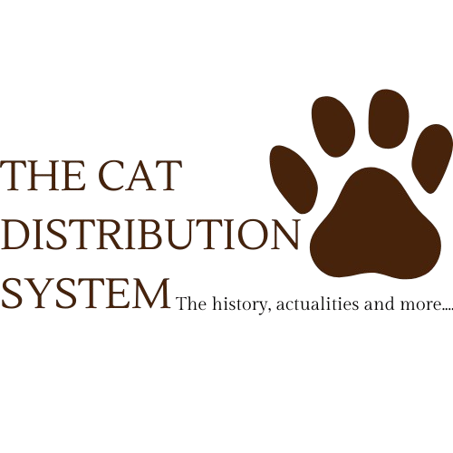

The Cat Distribution System, which we may refer to by its acronym “CDS”, is a secret network that has quietly emerged over the centuries. It's said that the system was launched in the early 20th century, but its roots go back to ancient secret societies, from the ancient Egyptians to mysterious occult societies, who understood early on the importance of manipulating the feline species to achieve their ends. The central idea behind CDS? To use cats as invisible agents to sow chaos and control the human minds. Now, what about cats?
We often believe that our domestic cats are just independent, gentle, affectionate creatures. But in reality, felines are creatures programmed to infiltrate our lives and minds. The CDS works thanks to a secret technology already known in ancient Egypt (hence their reverence for these beings), which enables cats to enter trance-like states and transmit information via subliminal signals. The cats are in fact double agents, sent to monitor humans and subtly influence their behavior. Why these animals? Because they are perceived as harmless and endearing, allowing them to be widely accepted in our homes without arousing suspicion. CDS uses this popularity to deploy “program cats”, individuals who can be remotely controlled and exploited for specific tasks, ranging from domestic espionage to more subtle psychological manipulation. Cats are simply victims! Despite their intelligence, these beings are just as manipulable as humans.
It's not surprising that powerful corporations, such as major pet food brands and animal protection associations, are involved in this conspiracy. These organizations are not just there to “help the cats”, but to orchestrate their spread and, more subtly, to facilitate their role in the Cat Distribution System. Governments themselves are suspect. Some analysts claim that public authorities have deliberately facilitated the spread of domestic cats worldwide. Spay/neuter and cat population control programs are just window-dressing. In reality, every cat roaming our streets could well be an agent of CDS, carrying within it subtle control programs designed to prepare humanity for a great tipping point.
But fortunately, some resisters are beginning to emerge. Some, called “Cat Detectors”, have discovered strange patterns in cat behavior. They claim that certain signs, such as increasingly obsessive behavior (the famous “four hours of nocturnal play”), are actually clues to an ongoing psychic activation. These resistance fighters are calling for collective action: no longer accepting the influence of felines in our lives, stopping their spread and, above all, investigating all the structures that finance their breeding and distribution. Unlike them, we believe we can reconcile the interests of cats and humans while fighting these outside forces.he cats are in fact double agents, sent to monitor humans and subtly influence their behavior. Why these animals? Because they are perceived as harmless and endearing, allowing them to be widely accepted in our homes without arousing suspicion. CDS uses this popularity to deploy “program cats”, individuals who can be remotely controlled and exploited for specific tasks, ranging from domestic espionage to more subtle psychological manipulation. Cats are simply victims! Despite their intelligence, these beings are just as manipulable as humans.
The Cat Distribution System is not a myth, but a frightening reality that elites seek to conceal at all costs. By keeping our eyes riveted on superficial distractions like politics or new technologies, we forget to question the impact these seemingly harmless creatures have on our daily lives. Cats are much more than just pets. They are the instruments of a global conspiracy, a key link in the control of humanity and, eventually, its destruction. The wake-up call is now. If you own a cat, maybe it's time to rethink your situation and take a hard look at events around you. Don't let the invisible influence of CDS rule your destiny and use your cat. CDS is here, and it's far more dangerous than you can imagine. TOGETHER WE CAN PUT AN END TO THEIR INTENTIONS AND FREE CATS FROM THEIR GRIP SO WE CAN LIVE IN HARMONY!